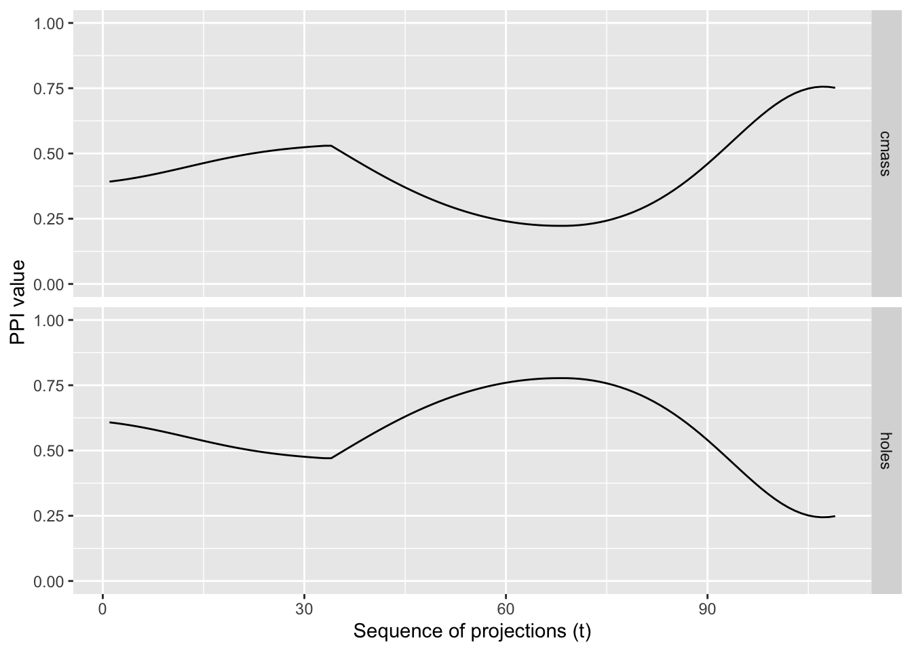
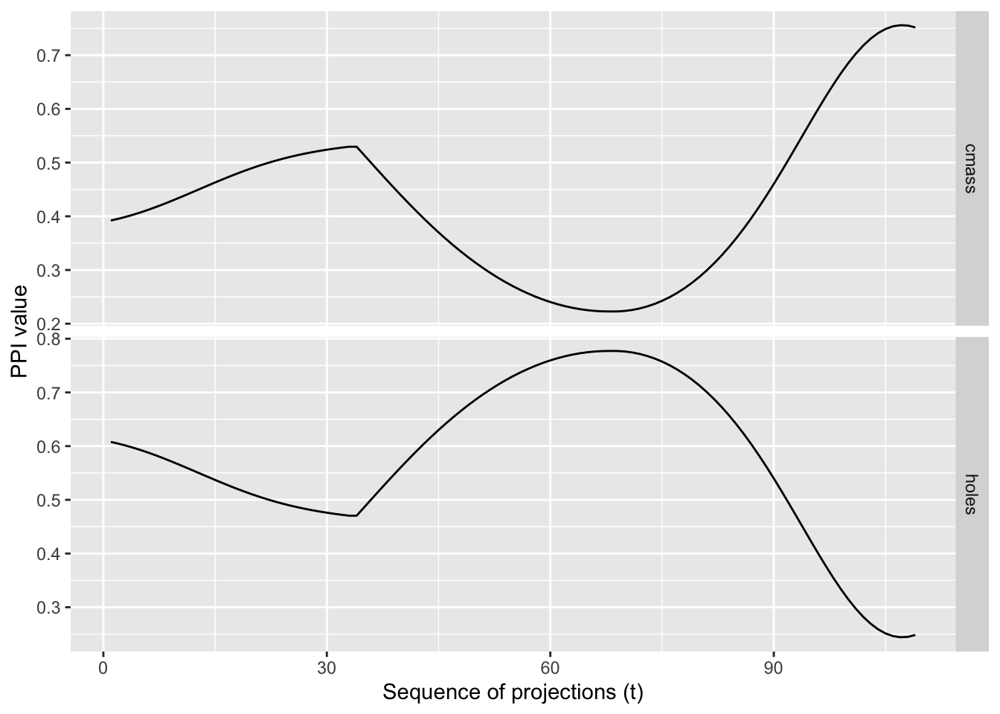

spinebil: Core Diagnostics for Projection Pursuit Indices
Author
Tina Rashid Jafari
A practical tour of the five most important functions in spinebil for finding, validating, and understanding projection pursuit indices.
Overview
This vignette presents a compact workflow built around five functions: squintAngleEstimate(), profileRotation(), compareSmoothing(), timeSequence() and getTrace().
From how far away (in projection space) does the pattern become visible under a chosen index?
squintAngleEstimate(), produces a distribution of squint angles by repeatedly walking from random 2‑D planes toward an assumed optimal plane (the best view of a structure) and recording the first point along each path where a user‑chosen index function exceeds a visibility cutoff.
Interpretation:
Larger squint angles ⇒ easier to see (the index crosses the cutoff while still far from the optimal plane).
Smaller squint angles ⇒ harder to see (the index only crosses when we are very close to the optimal plane).
Function usage
squintAngleEstimate( data, # numeric matrix/data frame (n x p) indexF, # function: (n x 2) -> numeric scalar cutoff, # numeric threshold for 'visible' structurePlane, # 2-D basis (p x 2) representing the optimal viewn =100, # number of random startsstepSize =0.01# interpolation step along the tour path)
Set this data‑driven so results are comparable across datasets and indices.
Preferred: 95th–99th percentile of the index computed on random projections (a null where no specific structure is targeted).
You can use indexNoiseThreshold() to estimate this cutoff automatically.
structurePlane (where is the best view?)
If you know the two variables that define the structure, construct the basis directly. Otherwise, run a guided tour to maximize the index and use the best basis it returns.
n and stepSize
n = 100 typically yields a stable distribution for summaries and plots.
stepSize = 0.01 is a good accuracy/speed trade‑off. If the threshold crossing looks coarse (the index jumps over the cutoff), try 0.005. If runtime is an issue, use something larger (e.g., 0.02).
Return value
squintAngleEstimate() returns a numeric vector of length n containing the squint-angle estimates under the specified index and cutoff.
2) profileRotation()
Does the index value stay the same when the 2‑D data are rotated?
profileRotation() tests rotation invariance of one or more 2-D projection indices.
Interpretation
Flat profile → rotation invariant.
Oscillating profile → orientation dependence.
Function Usage
profileRotation( d, # 2-column numeric matrix (the data to rotate) indexList, # list of functions: (n x 2) -> numeric indexLabels, # character labels for columnsn =200# number of rotation steps across [0, 2*pi])
Inputs
d: numeric matrix with 2 columns; the 2-D data to be rotated.
indexList: list of functions, each taking an \((n \times 2)\) numeric matrix and returning a single numeric index value. Examples: list(tourr::holes(), scagIndex("stringy"), mineIndexE("MIC")).
indexLabels: character vector of labels (one per index in indexList) used as column names in the result.
n(default = 200): integer number of rotation steps.
A numeric matrix with n + 1 rows and length(indexLabels) + 1 columns:
One column per index (named by indexLabels) containing the index values at each angle.
An additional column alpha giving the corresponding angles in radians.
3) compareSmoothing()
Projection–pursuit indices evaluated along a tour path can be spiky due to small numerical changes in the projection or to point-level noise. compareSmoothing() provides a principled way to smooth these traces by averaging the index over local perturbations, and to compare different smoothing strategies side-by-side.
It supports two kinds of perturbations:
jitterAngle: randomly jitter the projection plane by a small angle alpha via geodesic moves, then recompute the index.
jitterPoints: randomly jitter the projected points by a small amount (using base::jitter()), then recompute the index.
noSmoothing: the original index with no perturbation.
Averaging across multiple perturbations reduces high-frequency noise and reveals the underlying trend of the index along the tour.
Function Usage
compareSmoothing( d, # data matrix (n x p) tPath, # interpolated tour path: list of projection bases (p x 2) idx, # index functionalphaV =c(0.01, 0.05, 0.1), jitter amounts to compare (for jittering angle or points)n =10# number of evaluations entering mean value calculation)
Inputs
d, numeric data matrix with p columns. It will be projected as d %*% basis for each basis in tPath.
tPath, list of (p × 2) projection bases. Typically built from a tour history using tourr::save_history() and tourr::interpolate().
idx, index function accepting a two-column matrix and returning a single numeric value (e.g., scagIndex("stringy")).
alphaV, numeric vector of jitter magnitudes to compare.
n, number of evaluations entering mean value calculation (larger n → smoother, slower).
noSmoothing (red, solid): the raw index trace along the tour. Spiky traces indicate high sensitivity to tiny projection changes.
jitterAngle (black, dashed): averaging over nearby projection angles. Smooths out high‑frequency variability caused by small plane movements; preserves structure amplitude better when index is robust to minor orientation shifts.
jitterPoints (black, dotted): averaging over point noise. Strong smoothing when the index is sensitive to local point perturbations.
Return value
A tibble with columns:
indexMean, mean index value at each frame (includes the original, unjittered value).
t, integer frame index along the tour path.
method, one of "jitterAngle", "jitterPoints", "noSmoothing".
alpha, jitter magnitude used for that row.
4) timeSequence()
The cost of evaluating a projection pursuit index can vary with both the data distribution and the projection. timeSequence() times the index on a sequence of projection bases and returns a simple table you can plot or summarise.
Function Usage
timeSequence( d, # numeric data matrix (n x p) t, # list of projection matrices (each p x 2); e.g., an interpolated tour path idx, # index function: (n x 2) -> numeric pmax # maximum number of projections to evaluate (cut t if longer than pmax))
Inputs
d: numeric matrix of size \(n \times p\).
t: list of (p × 2) projection bases (e.g., from tourr::basis_random() or an interpolated tour history).
idx: index function mapping a two-column matrix to a single numeric value (e.g., scagIndex("stringy")).
pmax: integer limit; evaluation stops after pmax projections even if t is longer.
t: elapsed time in seconds for the index evaluation at that projection.
i: the sequence index (1, 2, …) of the projection in t.
5) getTrace()
getTrace() evaluates one or more projection pursuit indices along an interpolated, planned tour path and returns their values at each frame. Plotting these traces reveals whether an index varies smoothly with small changes in the projection (desirable), or exhibits spikes (potentially unstable, overly sensitive, or under‑smoothed).
A smooth trace indicates that small rotations of the view produce small changes in the index,an important property for guided tours and optimisation.
In combination with plotTrace(), you can quickly diagnose index behaviour across a path connecting user‑specified views.
Function Usage
getTrace( d, # data: matrix/data frame (n x p) m, # list of projection matrices for the planned tour indexList, # list of index functions to calculate for each entry -> numeric indexLabels # character vector of labels for the indices)
Inputs
d; numeric data with p columns.
m; list of (p × 2) projection matrices for the planned tour.
indexList; list of functions that take a two‑column matrix and return a numeric scalar (e.g., tourr::holes(), tourr::cmass(), or scagIndex("stringy")).
indexLabels; character vector of the same length and order as indexList; used as column names in the output.
Example Usage
d <-spiralData(4, 100)m <-list(basisMatrix(1,2,4), basisMatrix(3,4,4))indexList <-list(tourr::holes(), tourr::cmass())indexLabels <-c("holes", "cmass")trace <-getTrace(d, m, indexList, indexLabels)plotTrace(trace)

plotTrace(trace, rescY =FALSE)

Return value
A numeric matrix with length(indexLabels) + 1 columns and as many rows as interpolation frames. Columns are the index values (named by indexLabels) and t (the frame index).